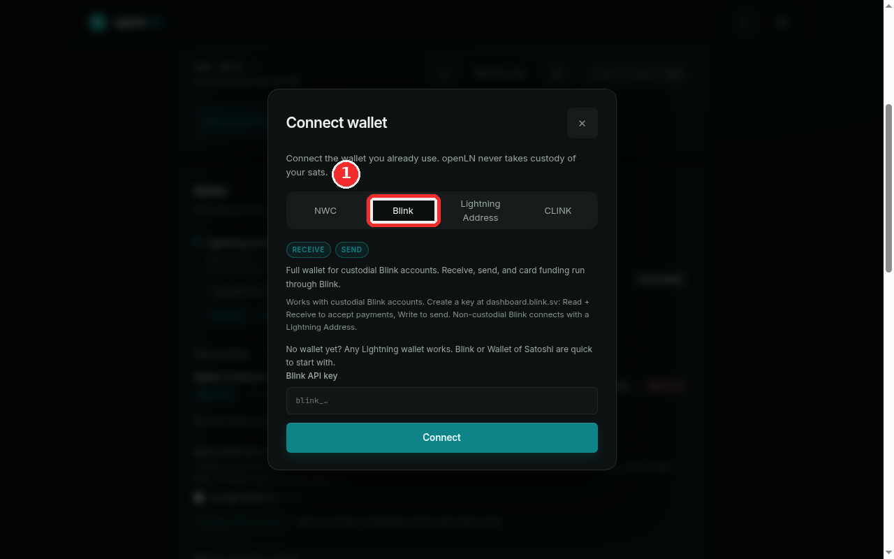
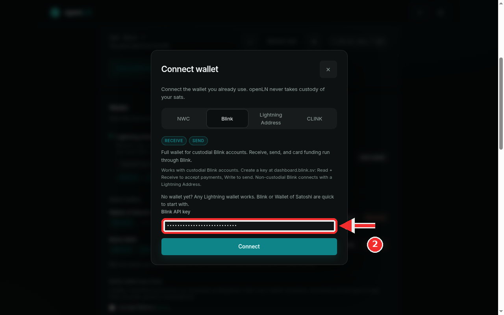

How to connect a Blink wallet
This guide connects a custodial Blink account to your openLN account with a Blink API key. Because Blink offers an API, this is a full wallet: once it is saved, openLN can receive into Blink, read the balance, and send from it when you ask, and the wallet can be picked for the RIC and Cards in their sections. The whole thing takes a couple of minutes, and nothing is charged during setup.
- You are signed in to your openLN account (any device, phone or computer).
- You have a Blink account, and it is a custodial one (the kind that offers an API key). A non-custodial Blink account has no API key and connects with a Lightning Address instead; the Wallet of Satoshi guide covers that flow.
- You can open dashboard.blink.sv in a browser and create an API key there.
- Nothing is charged during setup and no funds move.
Open the connect dialog and choose the Blink tab
Go to Settings and find the Wallet card, the one that starts with "How this account receives and sends sats". On the right of the wallet line you will see a button: it reads Connect when this is your first wallet, and Add wallet when you already have one saved. Press it and the Connect wallet dialog opens.
The dialog offers four kinds of connections: NWC, Blink, Lightning Address and CLINK. Press the Blink tab. The chips under the tabs show Receive and Send both lit, meaning this is a full wallet, and the dialog's own text summarizes it: "Full wallet for custodial Blink accounts. Receive, send, and card funding run through Blink."
Before you can fill the field you need a Blink API key. Sign in at dashboard.blink.sv, open the API keys area and press Create API key. When you create it, enable Read and Write scope on the key: Read is what lets openLN see the account and confirm the key works, and Write is what lets openLN send from the wallet when you ask it to. The dialog summarizes the same idea as "Read + Receive to accept payments, Write to send". Copy the key once it is shown; it starts with blink_.
One thing the dialog states plainly, and it is worth understanding before you connect: openLN never takes custody of your sats. A Blink account is custodial, which means Blink holds the funds for you. openLN only gets permission to ask Blink to act on your behalf; it never holds the money itself.

Paste the key and press Connect
Press the Blink API key field and paste the key you copied. The field is masked: it shows dots instead of the key as you type, which is normal for a secret and does not mean anything went wrong. For example, a key looks like blink_bob_demo_api_key_0000.
Double-check that you copied the whole key before continuing. openLN verifies it with Blink before saving anything: it reads the account and proves the key can be used, and a key that cannot be read is refused with the reason shown under the form. Nothing is saved when the check fails.
Press the big Connect button at the bottom of the dialog. openLN checks the key with Blink, saves the wallet, and closes the dialog with a "Wallet connected" message. Then look at the Wallet card in Settings: your Blink wallet now appears as Blink API wallet with Receive and Send chips and a balance line read from Blink. If this was your first wallet it is also the default; otherwise it is added beside your existing wallets and nothing replaces the default on its own.

- Custodial means Blink holds the funds. Your Blink balance is an account with Blink, not a wallet on your own device. openLN never takes custody of your sats; it asks Blink to receive and send, and Blink answers.
- Non-custodial Blink accounts connect differently. An account that has moved away from custody has no API key and the key lane will not work. Connect it with a Lightning Address instead; Blink addresses still work and can still confirm payments. The Wallet of Satoshi guide walks through the Lightning Address flow.
- Sending needs the Write scope. If a send is refused for permissions, the message points back at dashboard.blink.sv and the Write scope: add it to the key there and try again. If you only plan to receive, reconnects and receiving keep working without it.
- A Blink-side refusal is not a permission problem. Blink is winding down custodial accounts in some regions. If the app says the account can no longer receive and to migrate funds, that is Blink's own decision on the account, not a missing scope or an openLN fault.